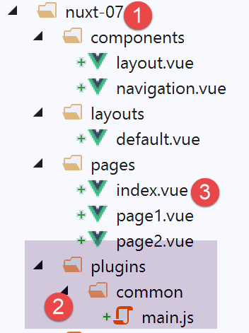

10. Example [nuxt-07]: Client and Server Contexts
10.1. Introduction
Example [nuxt-07] aims to explore the [context] object on both the server-side and client-side. It is important to remember that these two components of [nuxt] applications are separate: they share nothing except:
- what the server chooses to send to the client (in the HTTP response and the rendered page);
- what the client chooses to send to the server (in its HTTP request);
So, as we will see, while the objects handled by the server and those handled by the client have the same name, they are not identical: they may sometimes be copies of each other but never have the same reference. Modifying a client-side object has no effect on the object of the same name on the server side, and vice versa.
The example [nuxt-07] is initially obtained by copying the example [nuxt-01]:

- in [2], we will add a plugin shared by the client and the server;
- in [3], we will modify the [index] page slightly; ## 10.2. **The [common / main.js] plugin**
The [common / main.js] plugin is executed by both the client and the server: this is due to the following [nuxt.config.js] configuration:
/*
** Plugins to load before mounting the App
*/
plugins: [{ src: '~/plugins/common/main.js' }],
- line 4: the absence of the [mode] property means that the [~/plugins/common/main.js] plugin will be executed by both the client and the server: the server first, then the client;
This plugin will be the following:
/* eslint-disable no-undef */
/* eslint-disable no-console */
export default function(...args) {
// Who executes this code?
console.log('[main server], process.server=', process.server, 'process.client=', process.client)
const who = process.server ? 'server' : 'client'
const main = '[main ' + who + ']'
// number of arguments
console.log(main + ', there are', args.length, 'arguments')
// 1st argument
const context = args[0]
// context keys
dumpkeys(main + ', context', context)
// the application
dumpkeys(main + ', context.app', context.app)
// the route
dumpkeys(main + ', context.route', context.route)
console.log(main + ', context.route=', context.route)
// the router
dumpkeys(main + ', context.app.router', context.app.router)
// router.options.routes
dumpkeys(main + ', context.app.router.options.routes', context.app.router.options.routes)
console.log(main + ', context.app.router.options.routes=', context.app.router.options.routes)
// 2nd argument
const inject = args[1]
console.log('inject=', typeof inject)
}
function dumpkeys(message, object) {
// list of keys from [object]
const line = 'List of keys [' + message + ']'
console.log(line)
// list of keys
if (object) {
console.log(Object.keys(object))
}
}
- lines 31–39: the [dumpkeys] function lists the properties of the object passed as the second parameter. This list is preceded by the message passed as the first parameter;
- line 3: we want to know how many arguments the function receives. To do this, we use the [...args] notation, which will place the actual function parameters into the [args] array. We will find that there are two arguments;
- line 5: we display who is executing the code, the server or the client;
- line 6: the code executor, client or server;
- line 7: a string constant used in the logs;
- line 12: we will see that the first argument received by the plugin is the executor’s context;
- line 14: list of keys for the [context] object;
- line 16: we will see that the [context] object has an [app] property representing the [nuxt] application;
- line 18: we will see that the [context] object has a [route] property representing the router’s current route;
- line 21: we will find that the [app] object has a [router] property that represents the router;
- line 23: the [router.options.routes] object represents the application’s various routes;
- lines 27–28: the second argument of the plugin is the [inject] function that we used in the [nuxt-06] example; ## 10.3. **The plugin executed by the server**
When run, the server displays the following:
- lines 11–12: we have already had the opportunity to use the [base] and [env] properties, whose values come from the [nuxt.config.js] file;
- line 8: the [app] property refers to the [nuxt] application;
- line 18: the [route] property refers to the router’s current route, i.e., the page the server will send;
- line 13: the HTTP request from the client browser;
- line 14: the server’s HTTP response;
The list of [context.app] properties is as follows:
- line 3: the [router] property gives us access to the application's router. This is important in [Nuxt] since the router is defined by [Nuxt] itself and not by the developer. This property provides the developer with access to modify the router;
The list of [context.route] properties is as follows:
The route [context.route] when the server starts is as follows:
- line 2: we see that the next page on the server is [index] and that its path is [/] (line 10);
- line 22: the [meta] property allows you to add properties to routes;
The properties of the server's [context.app.router] are as follows:
The various routes of the application are found in the [context.app.router.options.routes] property:
Finally, the second argument:
10.4. The server's [index] page
The [index] page is as follows:
<!-- main page -->
<template>
<Layout :left="true" :right="true">
<!-- navigation -->
<Navigation slot="left" />
<!-- message-->
<b-alert slot="right" show variant="warning">
Home
</b-alert>
</Layout>
</template>
<script>
/* eslint-disable no-undef */
/* eslint-disable no-console */
/* eslint-disable nuxt/no-env-in-hooks */
import Navigation from '@/components/navigation'
import Layout from '@/components/layout'
export default {
name: 'Home',
// components used
components: {
Layout,
Navigation
},
data() {
return {
who: process.server ? 'server' : 'client'
}
},
// lifecycle
beforeCreate() {
// client and server
console.log('[home beforeCreate]')
},
created() {
// client and server
console.log('[home ' + this.who + ' created]')
this.dumpkeys('[home ' + this.who + ' created], this.$nuxt', this.$nuxt)
this.dumpkeys('[home ' + this.who + ' created], this.$nuxt.context', this.$nuxt.context)
},
beforeMount() {
// client only
console.log('[home ' + this.who + ' beforeMount]')
},
mounted() {
// client-only
console.log('[home ' + this.who + ' mounted]')
},
methods: {
dumpkeys(message, object) {
// list of keys from [object]
const line = 'List of keys [' + message + ']'
console.log(line)
if (object) {
console.log(Object.keys(object))
}
}
}
}
</script>
- line 43: we have already seen that a page’s context can be found in [this.$nuxt.context];
- line 42: we also display the properties of the [this.$nuxt] object;
When executed by the server, this page generates the following logs:
The server context properties on the [index] page are as follows:
These are the same properties as in the plugin's [context] object.
10.5. The plugin executed by the client
Once the server has sent the [index] page to the client browser, the client-side scripts take over. The [main.js] plugin will then be executed. These logs are as follows:
We find properties similar to those found on the server side, with some properties missing and others appearing. For example, in line 4, the [req, res] properties—which were the client browser’s HTTP requests and the server’s HTTP response—are missing.
10.6. The client's [index] page
The client's [index] page produces the following logs:
- line 4: the properties of the [this.$nuxt] object. It is a rich object with 51 properties;
- line 6: the properties of the [this.$nuxt.context] object. These are the same properties found in the [context] object of the client plugin;